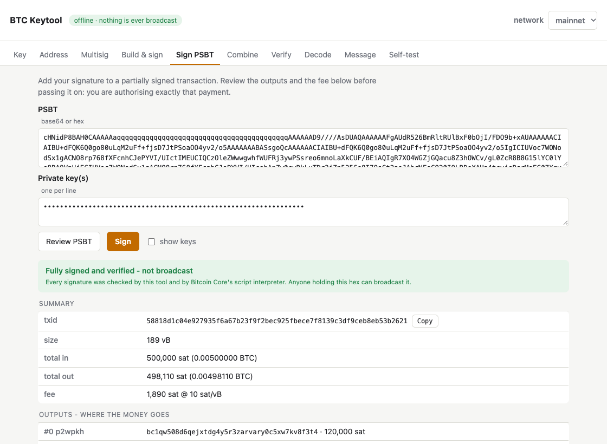

btc-keytool derives addresses from a private key, builds and signs transactions, and handles k-of-n multisig with PSBTs. It contains no network code, broadcasts nothing, and verifies every signature before it shows you a result.

A signing tool that hands back an invalid transaction has failed at its one job. So nothing leaves btc-keytool unchecked.
Each signature is verified against its public key the moment it is made.
Every signature already present, yours or a cosigner's, is verified before it is counted. A bad one is an error that names the key. It is never silently dropped.
The finished transaction is checked by the tool's own verifier, which reports who signed what and enforces low-S, and then by libbitcoinconsensus, Bitcoin Core's script interpreter, with every consensus rule up to taproot enabled.
btc-keytool verify repeats all of it on any raw transaction or PSBT,
and exits 0 only for a fully signed transaction whose every signature is valid.
If either check in step 3 fails, the transaction is not output at all.
The CLI and the desktop app are thin shells over one Rust library, so they behave identically.
From one private key (WIF, hex or decimal): the public key and all five address types it controls, P2PKH through taproot.
Describe a transaction in a small JSON spec. Fees are computed from the worst-case signed size, so you never land below the rate you asked for.
Create k-of-n addresses, sign in turns or in parallel, combine and finalise. P2WSH, P2SH-P2WSH and legacy P2SH.
Refuses a key that does not match its input, an overspend, a fat-finger fee, and a misspelled spec field that would otherwise turn your change into fee.
A PSBT from someone else cannot make you sign with a sighash that lets the outputs be rewritten, or hide the real fee behind an input amount nothing proves. See the list.
Inspect any raw transaction or PSBT: outputs, fee, who has signed, who has not.
Sign and verify text messages (BIP137) to prove control of an address.
Nonces come from RFC 6979 and BIP340, not a random number generator, so a weak one cannot leak a key. New keys use the operating system's entropy source.
It may come from a cosigner whose machine is compromised, or from someone who wants your signature
for something other than what they say. sign refuses by default, and each override is a flag you
have to type.
| What the PSBT tries | What happens |
|---|---|
| A sighash type other than ALL, so the outputs can be rewritten after you sign | Refused. --allow-sighash overrides, and the result is flagged in every later decode and verify.
The desktop app never signs one. |
| SIGHASH_SINGLE with no matching output, which yields a signature valid for any spend of that key | Refused always. There is no override. |
| An input amount nothing proves. A legacy signature does not cover the amount at all. A segwit v0 signature covers only its own input, so two signed versions of one transaction, each understating a different input, can be spliced into one that burns the difference as fee. | Refused unless the PSBT carries the previous transaction. --trust-amounts overrides and the
result carries a warning. Taproot inputs are exempt: their signatures commit to every amount. |
| A fee that looks like a mistake: above 100k sat and over half the inputs or over 1000 sat/vB | Refused before any signature is made. --force overrides. Below that floor, a
fee over half the inputs still gets a warning. |
| Signing unseen | At a terminal, sign shows the outputs and the fee and
asks. With nobody at the terminal it refuses without --yes. The desktop app shows the review on the
first press of Sign and signs on the second. |
| Inputs marked as already signed that are not | A PSBT is only reported complete if the finished transaction verifies. |
| Impossible amounts, no inputs, the same input twice | Refused. |
Your own spec gets the same care in a different place: a misspelled field or a key named twice is an error, and a private key typed into the wrong field is never repeated in the error message.
A 2-of-3 spend where each cosigner works on their own machine. Private keys never travel; only the PSBT does.
# 1. everyone derives the same address from the public keys btc-keytool multisig -k 2 \ -p 02aa… -p 03bb… -p 02cc… # 2. build the spend; with no keys you get a PSBT # (give prev_tx in the spec: it proves the amount) btc-keytool build spend.json -o spend.psbt # 3. each cosigner reviews, then signs btc-keytool decode spend.psbt btc-keytool sign spend.psbt --key-file my.key \ -o spend.psbt # or sign in parallel and merge btc-keytool combine alice.psbt bob.psbt \ -o signed.hex
wsh(sortedmulti(2,…))) is printed for importing
into Bitcoin Core or Sparrow as watch-only.sign finalises the transaction, verifies
it both ways and prints raw hex instead of a PSBT.prev_tx on the input and the PSBT proves what it spends. Without it,
each cosigner has to pass --trust-amounts.multi_a) and MuSig.You should not have to take this on trust, so here is what the claim rests on and where it stops.
| Part | What keeps it offline |
|---|---|
| CLI and core library | No network code and no network-capable dependency.
cargo tree -p btc-keytool lists no HTTP, TLS, socket or async-runtime crate. |
| Desktop app | Loads no Tauri plugins (no HTTP, shell, filesystem or updater), grants its
window no Tauri API beyond its own commands, and ships a Content-Security-Policy of
default-src 'none'. The UI is static HTML and JavaScript with no third-party code. |
| Broadcasting | Left to you. Copy the hex to an online machine and paste it into any node or explorer. |
| The limit | Software cannot prove its own isolation. For real money, run it on a machine that is not connected. |
Prebuilt binaries for Linux, macOS and Windows are attached to each
release, with a SHA256SUMS.txt to
check them against. The binaries are not code-signed, so macOS and Windows will warn on first launch.
Building from source is the stronger option.
git clone https://github.com/rsantacroce/btc-keytool cd btc-keytool # command-line tool cargo build --release -p btc-keytool # desktop app cargo install tauri-cli cargo tauri build
# 124 built-in checks: BIP vectors, every input # type, multisig flows, tamper detection btc-keytool selftest # the same, plus cross-checks against # rust-miniscript cargo test --workspace
The self-test is also a tab in the desktop app.
addr produced legacy and segwit addresses that might not be spendable; both are fixed,
along with the smaller items in the list above. That is not a substitute for an independent audit.ps and shell history (use --key-file), and Copy in the app puts a key on the system clipboard.-o.newkey uses the operating system's entropy source. Fine for testing. For savings,
use hardware.